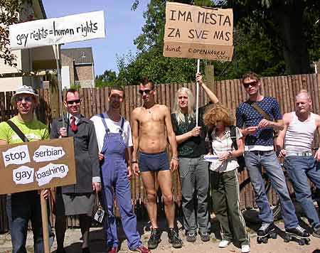
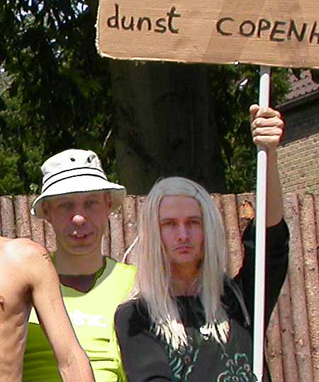
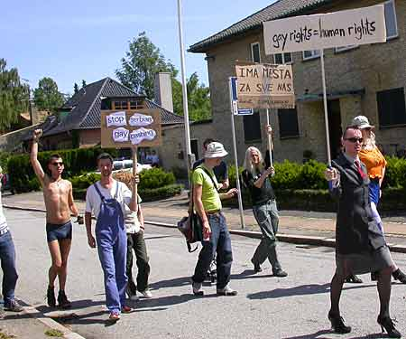
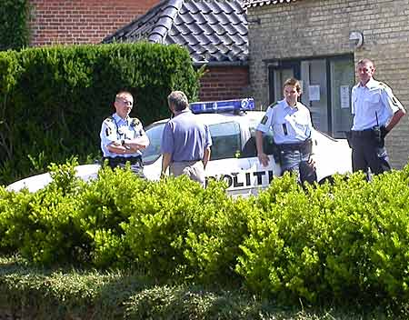
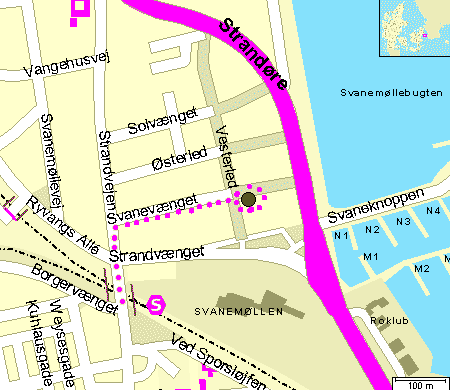

Dennis Agerblad with dunst will demonstrate in front of the Embassy of Serbia and Montenegro in Copenhagen. |






Letter to the Ambassy of the Federal Republic of Yugoslavia:
| Ambassy of the Federal Republic of Yugoslavia Svanevænget 36 2100 Copenhagen Ø Denmark Fax 3929 7919 To the Ambassador of the Federal Republic of YugoslaviaThe cultural & sexual political organization dunst will demonstrate in front of the Embassy of Serbia and Montenegro in Copenhagen, Denmark Saturday 17 July 13:00 – 15:00 The demonstration will show our solidarity with gay-, lesbians, bi- and transsexual people in Serbia and Montenegro, who are unable to celebrate their pride and freedom, as homosexuals do in all other major capitals in Europe. We are happy that the tolerance and respect for our lifestyles is improving in more and more countries worldwide. We are also happy to see that the Federal Republic of Yugoslavia is reorganizing itself and introducing democratic governments in the different new regions based on similar principles than our own. Because of the new situation it came as a shock to us, when we heard the news about the brutal attacks by football hooligans and right wing nationalists on the Gay Pride in Belgrade June 2001. About 50 people were injured and harmed under these attacks, including members of the police force protecting them. Witnesses tell that it was not only the acts of the aggressors that were shocking, but also the fact that civilians did not do anything to prevent the violence. They seemed to be on the side of the aggressors. Amnesty international expressed their concerns for the human rights in Serbia especially because Boško Buha, Belgrade's chief of police, and by Serbian Prime minister Zoran Djindjif, both of whom said that Serbia was not ready to tolerate homosexuality. And this year, the hooligans won again: Serbia’s organization for gay and lesbian people www.gay-serbia.com had the strength to organize a pride 17 July 2004, but the pride had to be cancelled because of serious and repeated threats from the hooligans. dunst has been involved in benefit concerts to raise money for the event and was prepared to travel to Belgrade to support the pride. We would therefore appeal to your government to take action that its minorities feel safe and respected as they do in other neighboring countries in Europe. Below you find the objectives of www.gay-serbia.com which we support, and we suggest that the Serbian Government take pro actions to support it too. The www.gay-serbia.com Campaign Against Homophobia main goal is: ”Cessation of Homophobia and Discrimination Against Same-sex Oriented Minority in All Their Facets.” This Campaign will help to mainstream (to a certain extent) the problems of gay and lesbian population in Serbia by informing the public (individuals, groups, and experts) about them. Through human rights groups and in direct with the media, we will advocate the following: * Fight against all forms of homophobia; * Cessation of harassment of the gay and lesbian population by the police. We will demand legal and police protection in cases of assault an robbery, as well as destruction of police files regarding same-sex-oriented people who have committed no crime; * Cessation of discrimination in hiring gays and lesbians; * Equal rights for gays and lesbians in all state institutions; * Introductions to schools of sexual education program that will be based on latest scientific research, so that same-sex orientation will be treated as one of several aspects of normal human sexuality; * Cessation of patriarchal that is heterosexual male dominance in society, i.e. unconditional equality for of women and men, dismantling of the stereotypical gender roles in life and education, cessation of the sanctioned sexual discrimination and gender role assignment in the family, at work etc. dunst dunst is an organization concerned with social, political and artistic matters in gay culture in Denmark and internationally. |
Letter to Gay-Serbia.com:
| Copenhagen performance group dunst in street action against gay bashing in Serbia. Saturday the 17 July the performance group "dunst" made a street action in front of the Serbian embassy in Copenhagen, Denmark to show their sympathy with suppressed sexual minorities in Serbia. Originally dunst had planned to come to Serbia to join the Belgrade pride parade arranged by www.gay-serbia.com and thereby support the movement in Serbia. dunst also joined a support party 27.03 2004 in Berlin to raise money for the event.
Unfortunately the Belgrade pride 2004 was cancelled due to serious and repeated threats from hooligans and right wing nationalists. The event in Copenhagen was a reminder to the Serbian government to take pro actions to support the rights of sexual minorities in their country. This was stated in a letter send to the ambassador Branislav R. Srdanovic. As a reaction to the letter and the demonstration Branislav R. Srdanovic invited three dunst activists for coffee and a discussion in the embassy. In the discussion dunst stated that we do understand the extraordinary conditions of the country, but this does not justify statements like "Serbia is not ready to tolerate homosexuality" made by Belgrade's Chief police Bosko Buha and Serbias prime minister Soran Djindjif after the brutal attack on the parade in 2001. Such statements shows a belief that some rights are more important than others, which is highly discriminating. "Gay rights = human rights". The ambassador was very friendly and liberal. He believed that our action was important and noble and gave a long explanation about the situation in Serbia. In his orientation he mentioned important dates in gay history in Denmark and compared them the political situation in Serbia at the time. When the first gay bar opened in Copenhagen 1948 Yugoslavia was still suffering from 2. World war and taken over by a socialist regime. When the registration of gay partnerships was allowed in Denmark in 1989, the civil war in Yugoslavia was about to break out. His explanation was that Serbia can not be compared to the development of the liberal society in Denmark. He assured that he personally was supporting the liberal thoughts behind the Danish laws and practices, but was also pointing to the fact that many of the members in the Yugoslavian government and administration are much more conservative. He concluded that Yugoslavia was developing in the direction of a liberal democratic society, but that there were serious problems with "pockets of aggressors" fighting this. On the question if he had taken any actions because of the event, he assured that he had given a formal orientation to the Yugoslavian government including a copy of our letter to him. All in all the event had a positive effect and hopefully will help to create an awareness of the problems of "gay bashing" and discrimination, which is still part of the Serbian every day life. dunst 2004. LINKS: dunst support event gay-serbia |